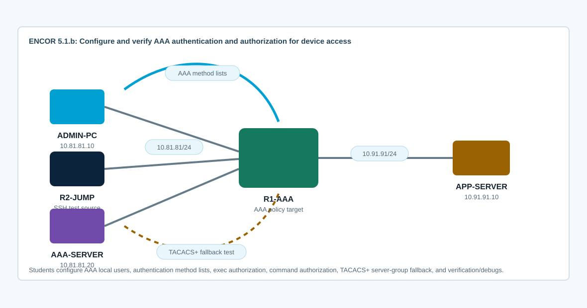

Overview
This lab targets ENCOR 5.1.b: configure and verify device access control with authentication and authorization using AAA. You will enable aaa new-model, build named authentication and authorization method lists, apply them to console and VTY lines, verify local fallback, and interpret TACACS+/RADIUS placement in the design.
CCNP-level value is in separating authentication from authorization. Authentication proves who the user is. Exec authorization decides whether the user gets an EXEC shell and at what privilege. Command authorization controls whether a command is allowed. TACACS+ is typically preferred for per-command authorization; RADIUS is commonly used for authentication and coarse attributes.
Topology
R1-AAA is the device under test. R2-JUMP and ADMIN-PC are management sources on the 10.81.81.0/24 network. AAA-SERVER is a placeholder external AAA server used to test method-list fallback and server reachability. APP-SERVER proves that management-plane changes do not break forwarding. The starting topology has IP reachability and no AAA policy.

Task 1: Baseline Management and AAA State
Before enabling AAA, inventory the line configuration and prove management reachability. Enabling AAA before creating a working local user and method-list plan is a common lockout path.
! R1-AAA
show ip interface brief
show running-config | include ^aaa|^username|^tacacs|^radius|^ip tacacs|^ip radius
show running-config | section line con
show running-config | section line vty
show users
show privilege
ping 10.81.81.2 source 10.81.81.1
ping 10.81.81.20 source 10.81.81.1
ping 10.91.91.10 source 10.91.91.1From R2-JUMP, verify that R1-AAA is reachable:
ping 10.81.81.1
show ip route 10.91.91.0Task 2: Create Local Users Before Enabling AAA
Create a local emergency path first. These users are used directly by local method lists and as fallback if an external AAA server is unavailable.
! R1-AAA
conf t
enable secret EncorEnable123!
username aaa-admin privilege 15 secret AaaAdmin123!
username aaa-ops privilege 5 secret AaaOps123!
username breakglass privilege 15 secret BreakGlass123!
ip domain-name encor.local
crypto key generate rsa modulus 2048
ip ssh version 2
ip ssh time-out 60
ip ssh authentication-retries 2
end
!
show running-config | include ^username|^enable secret|^ip ssh|^ip domain
show ip sshDepth check: Do not enable aaa new-model until you have a tested local recovery user and console access. AAA changes the default line authentication behavior.
Task 3: Configure AAA Authentication Method Lists
Enable AAA and build separate method lists for console and VTY. Use local-only authentication on the console and a TACACS+ group with local fallback for VTY access.
! R1-AAA
conf t
aaa new-model
!
tacacs server AAA-SERVER
address ipv4 10.81.81.20
key CiscoTacacs123!
!
aaa group server tacacs+ TACACS-ADMIN
server name AAA-SERVER
ip tacacs source-interface Ethernet0/0
!
aaa authentication login CONSOLE-AUTH local
aaa authentication login VTY-AUTH group TACACS-ADMIN local
aaa authentication enable default enable
end
!
show running-config | section aaa
show running-config | section tacacs
show aaa serversThe lab AAA-SERVER does not run a TACACS+ service by default. That is intentional: the VTY method list should try the server group and then use local fallback. In production, the same method-list structure points to ISE or another TACACS+ service.
Task 4: Apply AAA Authentication to Console and VTY Lines
Apply the named method lists. Keep console behavior predictable and use SSH-only VTY access for remote management.
! R1-AAA
conf t
line console 0
login authentication CONSOLE-AUTH
exec-timeout 10 0
logging synchronous
line vty 0 4
login authentication VTY-AUTH
transport input ssh
exec-timeout 10 0
logging synchronous
line vty 5 15
login authentication VTY-AUTH
transport input ssh
exec-timeout 10 0
logging synchronous
end
!
show running-config | section line con
show running-config | section line vtyFrom R2-JUMP, test valid and invalid logins. A valid local user should work after the TACACS+ attempt fails over to local.
ssh -l aaa-admin 10.81.81.1
ssh -l aaa-ops 10.81.81.1
ssh -l no-such-user 10.81.81.1
telnet 10.81.81.1Task 5: Configure Exec and Command Authorization
Authentication only gets the user identified. Configure authorization so user privilege and command access are evaluated by AAA. Use local authorization for console and TACACS+ with local fallback for VTY.
! R1-AAA
conf t
aaa authorization exec CONSOLE-EXEC local
aaa authorization exec VTY-EXEC group TACACS-ADMIN local
aaa authorization commands 1 VTY-CMD group TACACS-ADMIN local
aaa authorization commands 15 VTY-CMD group TACACS-ADMIN local
!
line console 0
authorization exec CONSOLE-EXEC
line vty 0 4
authorization exec VTY-EXEC
authorization commands 1 VTY-CMD
authorization commands 15 VTY-CMD
line vty 5 15
authorization exec VTY-EXEC
authorization commands 1 VTY-CMD
authorization commands 15 VTY-CMD
end
!
show running-config | include ^aaa authorization
show running-config | section line vtyLog in as aaa-admin and aaa-ops. Verify privilege level and command behavior:
show privilege
show users
show running-config
configure terminalInterpretation focus: local privilege is coarse. TACACS+ command authorization can return per-command permit/deny decisions. RADIUS generally does not provide the same per-command authorization model.
Task 6: Verify Server Fallback, Accounting Readiness, and Failure Modes
Prove the method list behavior. You should be able to explain whether the server was used, whether local fallback was used, and how to keep a break-glass path.
show aaa servers
show running-config | section aaa
show running-config | section tacacs
show users
show ssh
show logging | include AAA|TACACS|LOGIN|SSH
debug aaa authentication
debug aaa authorization
debug tacacs
undebug allOptional production-style accounting commands to recognize, but not required for this exam subtopic:
aaa accounting exec default start-stop group TACACS-ADMIN
aaa accounting commands 15 default start-stop group TACACS-ADMINDepth check: server fallback happens only when the server method is unavailable. A definitive reject from a reachable AAA server does not necessarily fall through to the next method. Know the difference between timeout, error, and reject.
Task 7: Troubleshoot AAA Defects
Use the symptom to isolate authentication, authorization, transport, or external server behavior.
- AAA was enabled before local users were created, causing remote login failure.
- The VTY line has no
login authenticationstatement, so the intended method list is not used. - SSH works but the user lands in the wrong privilege level because exec authorization is missing or the local user privilege is wrong.
- Commands fail unexpectedly because command authorization is applied without a usable fallback.
- AAA-SERVER is reachable by ping but TACACS+ fails because the shared key, source interface, or service is wrong.
- Local fallback works for server timeout but not for an explicit reject from the AAA server.
- Console access is broken because console and VTY method lists were treated the same without a break-glass design.
show running-config | section aaa
show running-config | section tacacs
show running-config | section line
show aaa servers
show users
show privilege
show logging | include AAA|TACACS|LOGIN
debug aaa authentication
debug aaa authorization
debug tacacs
undebug all